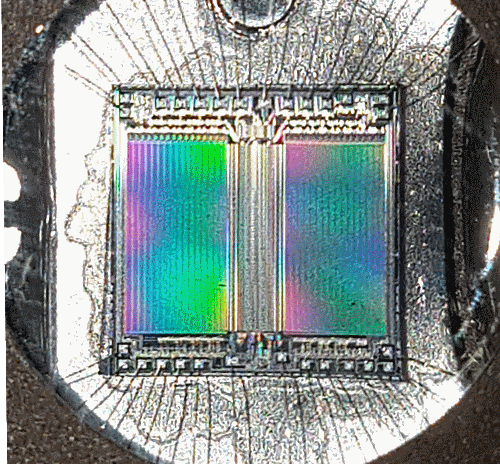

存储器组件
RAM 和 ROM 组件是 Logisim 内置库中较为有用的两个组件。然而，由于它们能够存储大量信息，它们也是最复杂的两个组件。
关于它们在电路中如何工作的文档，可以在库参考的RAM和ROM页面找到。用户指南的这一部分介绍用于查看和编辑存储器内容的界面。
Logisim 的集成十六进制编辑器
使用手形工具编辑存储器
弹出菜单与文件

32K x 8 UV EPROM
下一节： 十六进制编辑器。
RAM 和 ROM 组件是 Logisim 内置库中较为有用的两个组件。然而，由于它们能够存储大量信息，它们也是最复杂的两个组件。
关于它们在电路中如何工作的文档，可以在库参考的RAM和ROM页面找到。用户指南的这一部分介绍用于查看和编辑存储器内容的界面。
Logisim 的集成十六进制编辑器
使用手形工具编辑存储器
弹出菜单与文件

下一节： 十六进制编辑器。